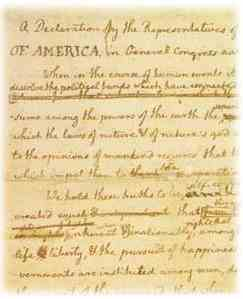

Drafting the Declaration
 In May, 1776, Jefferson arrived in Philadelphia to attend the Second Continental Congress. Delegates from 13 colonies came together to discuss their concerns about Great Britain's oversight of the colonies. It was at this meeting that many of the members of the Continental Congress decided that Independence from Great Britain was the only solution to these problems.
The Continental Committee
A committee, comprised of Jefferson, Benjamin Franklin, and John Adams, Robert Livingston, and Roger Sherman was give the task of writing a Declaration of Independence. The committee prevailed upon Jefferson to draft a document expressing their concerns and providing explanation as to why Independence was necessary. Jefferson wrote the first draft in 2-3 days. The committee members made a total of forty-seven changes to the draft. After debating the draft in the Continental Congress, an additional thirty-nine changes are made. The first public reading of the Declaration of Independence was in Philadelphia on July 8, 1776.
Jefferson is elected President in 1800
This video from Intelecom describes the tied election in that year.


The Charter of American Liberties
Since its writing, the Declaration of Independence has been regarded as a charter of American liberties, establishing the basic claims that all men are equal in rights, regardless of birth, wealth or status, and that the government is the servant, not the master, of the people.